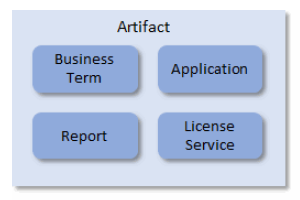
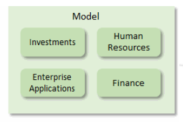
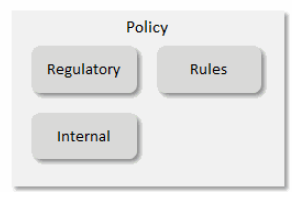
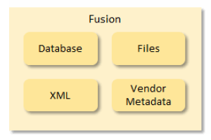
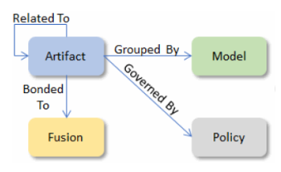

|
|
Introduction to assets
The assets that you create, maintain and track will typically fall into four basic categories:




Artifacts
Artifacts are collectively referred to as the Glossary, and provide a consistent, commonly understood and agreed upon, set of terms used throughout the organization.
The main artifact in the Glossary is the business term. Business terms do not exist in isolation, but are stored in applications, used in reports and processes and may be licensed from external sources and providers. The Glossary forms an inventory of these artifacts and the relationships that exist between them, standardizing, tracking and keeping control of the business vocabulary of your organization.
Suppose that you work for a manufacturing company, and you have contractual obligations related to deliveries. You assume that because of its obvious simplicity, that everyone in your company understands what delivery means. During the course of various management meetings you learn that:
Your Warehouse Manager believes that a delivery has been fulfilled when the product has left the loading dock.
Your Sales Manager believes that a delivery has been fulfilled when the product arrives at the customer site.
Your Customer Support Manager believes that a delivery has been fulfilled when the product is installed and usable.
Which definition is right?
With Infogix Data3Sixty Govern you provide a universal, agreed-upon definition for this term, or for any business term. You can assign an owner to the term, and you can identify its relationship to other terms, to contractual obligations, and to governmental regulations. Through graphical depictions of these relationships, you can easily identify the impact that it might have if you choose to redefine the term.
Models
A model is a hierarchical grouping for artifacts. Models are typically broken down by business function, such as Human Resources and Finances. You might choose to establish a separate model for each function, possible broken down further into sub-domains. The Human Resources function might have sub-groupings for Payroll, Benefits, and Recruitment.
Each model can be assigned its own properties (business metadata) and responsible party (business owner, data steward). Related artifacts can then inherit responsibility assignments from associated models.
Policies
Policies provides governance and compliance to the artifacts. A policy can be an industry or governmental regulation (such as GDPR or BCBS239), or it can be internal to your organization such as an IT or security policy. Rules can be applied to artifacts to ensure compliance.
Technical assets
In addition to these three basic categories of business asset, it is important to understand the role of Fusion.
Fusion is the technical data dictionary of Infogix Data3Sixty Govern, providing access to databases, big data metadata and structures for files of different types. Technical data can be automatically retrieved from various storage sources. Upon retrieval, technical data can then be related to artifacts, associating it with standard business terms.
Business and technical assets are related as follows:

Artifacts are organized into hierarchies by Models, are governed by Policies and are associated to technical metadata via Fusion.
Analyzing your data to identify assets
In order to identify assets to create and manage, you should analyze your most significant business reports and answer the following questions:
- What is the origin of this report, where does it come from?
- Is this report produced on a regular schedule and does it have significance to your organization? If so, it should be entered as an artifact.
- What format is the report in?
- Is the report generated for an internal or external audience?
- What person or group of people is responsible for this report? What is his or her, or their, role within your organization?
- Are there any dependencies for this report?
- Are there other similar or related reports?
- Are there obvious report fields that should be defined as business terms? Remember, you are concerned with the metadata surrounding the field, rather than the contents of the field itself.
For those business terms you should answer the following questions:
- What is the accepted definition of the term?
- What systems store this term?
- Which system is the authoritative source?
- What domain does the term belong to (e.g. Human Resources, Finance)?
- Is there a domain list associated with the term?
- Which parties (business owner, data steward) are responsible for the term?
- Is the term considered critical? If so you may choose to create a field or flag that you can use to designate certain material as critical.
- Are there any synonyms or other names or abbreviations in use for the term?
- Are there any restrictions on its use?
- Is the term personal or sensitive information? You may choose to create a field or flag that you can use to designate certain material as personal.
- Does the term require compliance with any known governmental regulations such as Sarbanes-Oxley or GDPR? You will need to enter those compliance programs as artifacts.
In the following topics we will cover browsing and searching your system for existing assets.
Browsing will help you to understand how your organization classifies and defines the assets it creates and tracks.
Searching for assets will allow you to check for items which already exist in the system. You can then collaborate on these existing items, asking questions or raising issues where necessary.